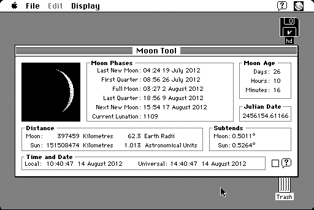

Download
moontool1.01.zip (66K) Moon Tool 1.0.1 repackaged into a zipped hfs disk image and checksum file. The disk image can be mounted with Mini vMac.
moontool1.01.cpt.hqx (90K) Moon Tool 1.0.1 in the original format.
copyright: Richard Knuckey
mod date: Apr 1, 1994
license: Freeware
Displays "the moon in its current phase along with detailed information on the Moon’s phase cycle". For "System 7.0 or higher". (See also: MacMoon)

If you find these downloads useful, please consider helping the Gryphel Project, which hosts them.
Here are the md5 checksums for the downloads, signed with Gryphel Key 5:
--------- GRY SIGNED TEXT --------- cfd5aca0795b93152e49fad48f342781 moontool1.01.zip bdd824b8b261d2f8dd080e31f6ec4c89 moontool1.01.cpt.hqx ------- BEGIN GRY SIGNATURE ------- Gry/4Xa8CFcUzxdN/N4LZbs6p6FUXIt+oUa4Ahhtrzyblj9osOEe6VNwNu4F5W8d 0sPeK0InRiY5LWdnMaFEJQhCzMW92XtjGeQmbkeSNTpKeLEUr5JgkgIf1F/Up3bT mYn12+9f6UaLBV7nb2SQM8RQhyVyXLG8kzTA6Th6KbUNM3oXZqE2hGb7KB0ZUAFn -------- END GRY SIGNATURE --------